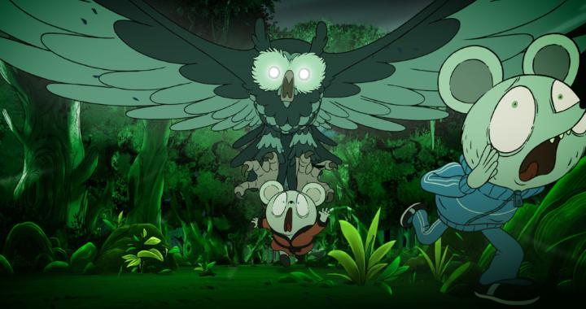

Disclaimer: This is a review of the feature-length 2025 animated film "Decorado," not of the animated short film of the same name (although the feature film is an expanded version of this short, by the same director)."Decorado" is the latest film from Alberto Vazquez, one of the more prominant independent animators from Spain. My opinion on his works are mixed. They're largely excellent, but meant primarily for adults, featuring sex, drugs and intense violence, all wrapped in a very cute setting with kid-friendly character designs, a deliberate tonal whiplash. The tone of his work, both short and feature films, is almost always "extremely depressing." That was true of his prior films "Birdboy" and "Unicorn Wars," and however much I respect them, I probably don't want to rewatch them, and would hesitate before recommending them to even the most adventurous of viewers. Thankfully, "Decorado" is different, even though it still retains all the R-rated content from before. The tone is even different from the original "Decorado" short, which I saw on the Bluray for "Birdboy." The feature-length version of "Decorado" is funny. Darkly funny. Mostly depressing, but also funny. This helps make the movie accessible, the most accessible I've seen yet from Vazquez. Almost accessible enough that I could actually recommend it to... some... people. Certainly, it's the first movie you should see from him if you plan to jump into the rest of his filmography. The original plot of the short film, from what I recall, was just a series of short loosely-connected vignettes, and to make a feature film, a better connecting plot was required. Arnold the mouse is the lead character, a married mouse in a small home in a town of humanoid animals. The town is increasingly reliant on a single massive conglomerate company, which sells their real estate, food, drinks, medication, clothing, and everything else. And increasingly, everyone is struggling to get by, unless you directly work for this one company which such a monopoly. Arnold himself has been unemployed for years, to the dismay of his wife, a struggling illustrator who's increasingly distant in their relationship. Life-problems aside, Arnold is increasingly paranoid about the world around him. He feels as if everyone is watching him... like his neighbours... or the child-star-turned-homeless-vagrant chicken... the fairy called "depression"... or the demon playing the harp at night in the forbidden forest at the edge of town... or the massive owl that hunts and eats animals at night in that forest... It's as if it's all a... a... DECORADO.  (The film opens with a definition, explaining "decorado" means a manufactured set, like you might use in a play. The word itself is sparringly used treated with great dramatic effect, usually accompanied by the title on screen.)Some of Arnold's fears are legitimate, some aren't, and his reactions lend to the humour. The wildly diverse and colourful cast of characters also add to the comedy, although from their state in life, it's not clear if you're supposed to laugh or cry at their misfortune. The story does wander a lot, not unlike the original short, but a big new part is the sense of mystery in Arnold's paranoia. Is there really something sinister or pre-determined regarding the events and lives in the town? Seemingly, there are no roads or paths to leave the town to a better world beyond... is this by design? As the climax builds, satisfying answers arrive towards this end. For the animation, "Decorado" is mostly on par with what we've come to expect from Vazquez's designs. Characters are cute, despite their setting and their adult voices with a mature delivery. It's also perhaps visually less ambitious than the prior films, which might be because of a general lack of action, or because the novelty for me had worn off a tad. It's always interesting to hear sometimes deep, forboding voices, straight out of a Guillermo del Toro live-action Spanish-language horror film, out of a Care-Bear - the Spanish-language dub is good. Sometimes, it really does feel like everything and everyone else in the world, except me, has gone crazy. It'd be nice to imagine that it really was all just a "Decorado" beyond my control. Maybe that made the movie, in this moment in time, more cathartic, and helped contribute to its accessibility. If there's anything to take away from it, it might be to not be afraid to take control of your life again... attacking neighbours and homeless vagrants... discovering that your hallucinations and conspiracies were in fact true... OK, maybe it's just best to stay inside and watch TV.
- "Ani" More reviews can be found at : https://2danicritic.github.io/ Previous review: review_Deca-Dence Next review: review_Delta_Space_Mission